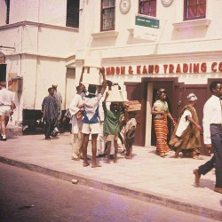
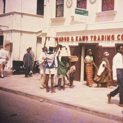
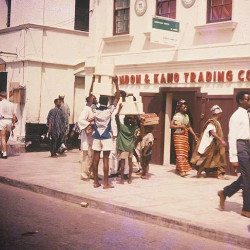
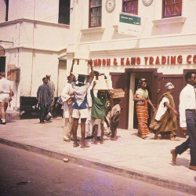

Miss Nigeria, Edna Park - 1964 Miss Universe Pageant
Nigeria, officially the Federal Republic of Nigeria, is a country in West Africa, bordering Niger in the north, Chad in the northeast, Cameroon in the east, and Benin in the west. Its coast in the south is located on the Gulf of Guinea in the Atlantic Ocean. The federation comprises 36 states and 1 Federal Capital Territory, where the capital, Abuja, is located. The constitution defines Nigeria as a democratic secular state.


 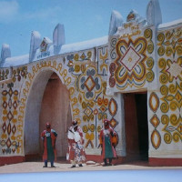
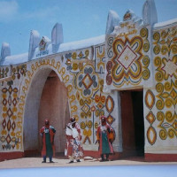

 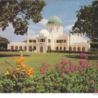
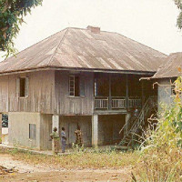
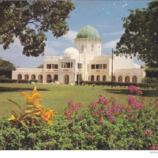
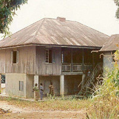


 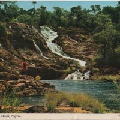
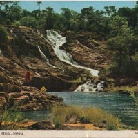


 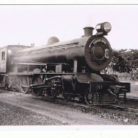
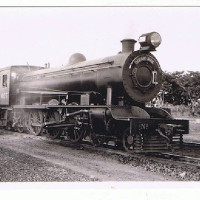
 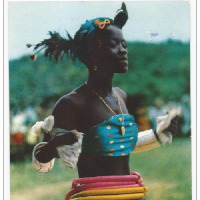
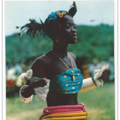
© copyright Nigeria in pictures. All Rights Reserved